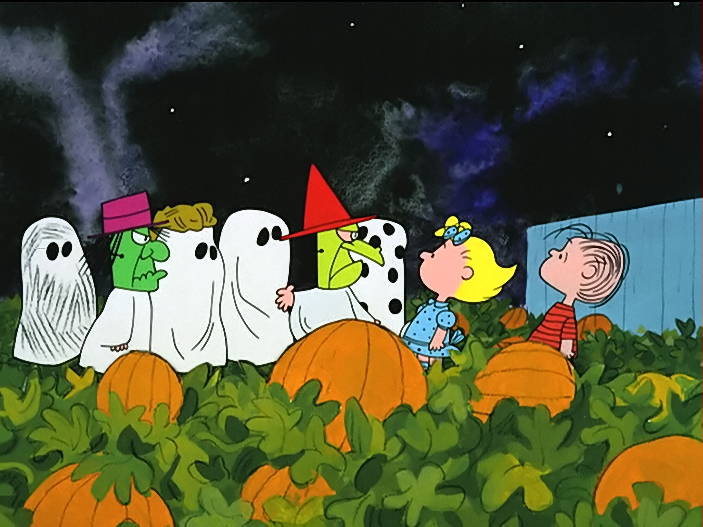

It's the Great Pumpkin, Charlie Brown!
You've probably seen the ads if not the actual special. The Peanuts Halloween Special, It's the Great Pumpkin, Charlie Brown, aired on cable television networks every year from 1966 to 2020. Usually airing at some point in the handful of days leading up to Halloween.
The special follows the entire Peanuts gang and how each of the celebrated Halloween.
Before Halloween, Linus writes a letter he intends to give to The Great Pumpkin. Because of Sally's feelings for Linus, she too becomes enraptured in the letter and The Great Pumpkin. Meanwhile Charlie Brown is extatic about being invited to a Halloween party.
On Halloween night, the gang meets up with Linus in a pumpkin patch where they make fun of him for choosing to spend the night in the pumpkin patch instead of trick or treating with them. While they're there, Linus manages to convince Sally to stay and wait for The Great Pumpkin with him. The rest of the group goes trick or treating where Charlie Brown keeps getting rocks instead of candy.
During this Snoopy, as The Flying Ace, is participating in an aerial fire fight with the Red Baron. During the battle Snoopy is "shot down", crash landing in the countryside behind enemy lines, forcing him to navigate dangerous lands. His journey ends with him appearing at the Halloween party the kids were at, where he manages to climb into the bobbing for apples tub while Lucy is in the middle of trying to get an apple. Snoopy eventually leaves the party heading for home.
Back at the pumkin patch Linus and Sally are still waiting for The Great Pumpkin when Linus sees a dark sillouette in the distance. Assuming it's The Great Pumpkin, Linus faints from excitment. The figure turns out to be Snoopy, which prompts Sally to yell at him for wasting her time before storming off. Around 4am Lucy comes to the pumpking patch to pick uo her little brother and take him home to put him to bed.
The next day, Charlie Brown and Linus talk about the events of the night before. Linus dissapointingly reveals that he didn't get to see The Great Pumpkin. In an attempt to console Linus, Charlie Brown accidently offends him leading Linus to go on a rant that The Great Pumpkin really dooes exist and that Linus will be waiting in the pumpkin patch again next year to see The Great Pumpkin and prove Charlie wrong.